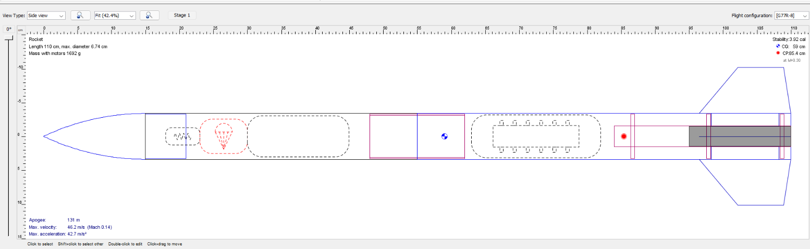
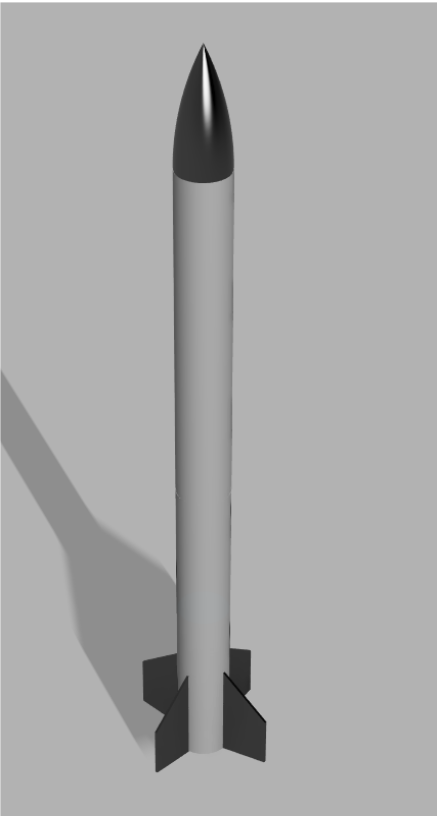
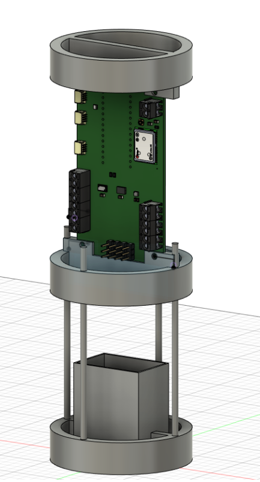
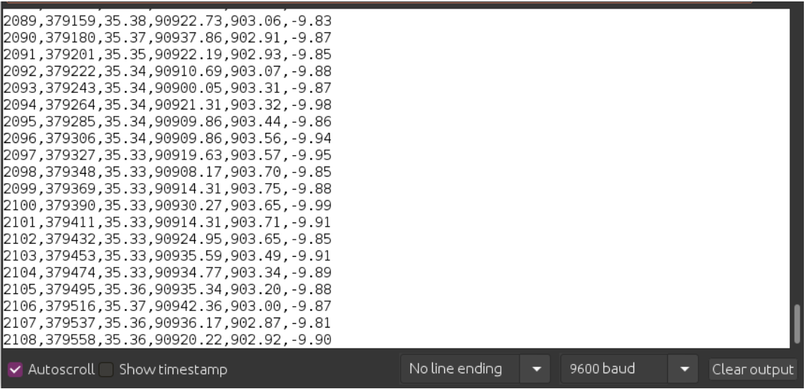
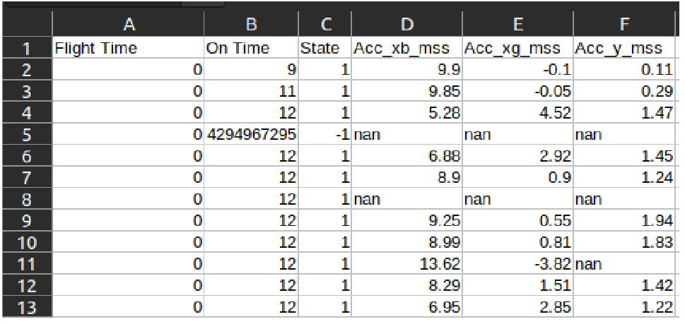
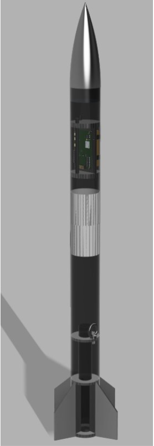
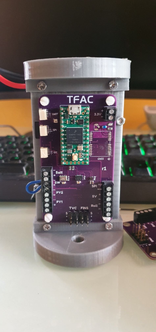
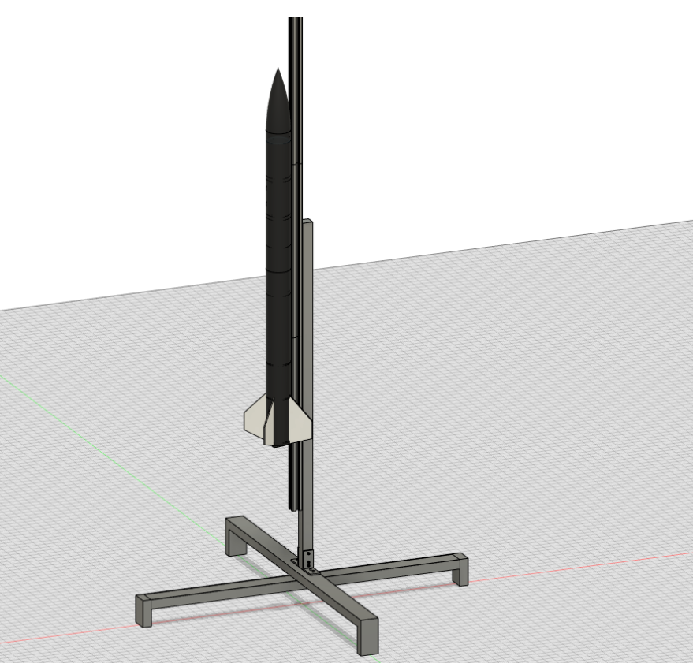
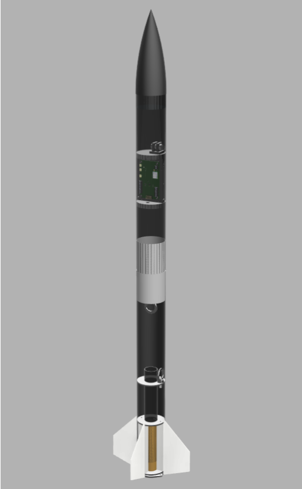
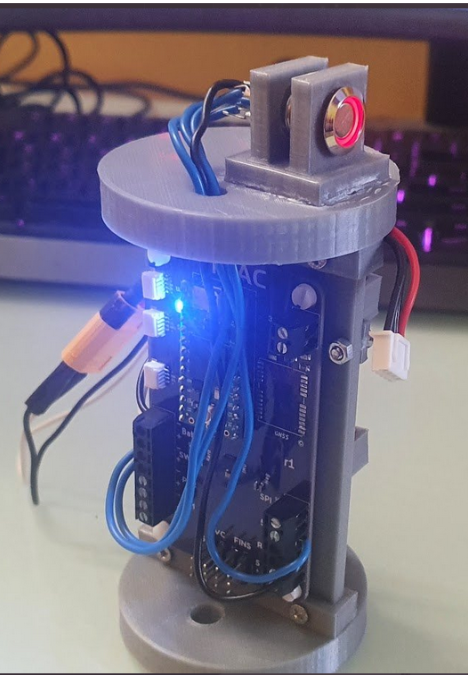

March - May 2022
Dev Log 8
Accomplishments in March 2022
As expected not much progress was made in March. Mainly I worked on the data logging part of the flight software and shuffled through a couple of flash and sd Arduino libraries. The one that I’m currently using is messing up the barometric data, I hope to fix that next month! Other than that I worked on both the OpenRocket sims (fig 1) and a 3D Model of Air Mk1 (previously AltusAer) in Fusion360. The OpenRocket simulation looks pretty good and might be the final version of this rocket, the 3D model is still in early stages of dev (fig 2), and should be done late April. Other than the rocket itself I worked on the Avionics stack for it (fig 3). TFAC is screwed into two couplers, one on the top and one on the bottom. Attached to the bottom (via a couple rods) is a ‘box’/holder for the 11.1V LiPo battery.
Air MK1 is about a meter tall and made out of fiberglass for the airframe, a 3D printed nose cone and plywood for the fins (which are through the wall) and centering rings. The rocket is divided into two sections of airframe. The aft section holds all the centering rings, motor tube, fins and avionics stack. The forward section has the 3D printed nose cone and the parachute ejection system (to be designed).



Accomplishments in April 2022
A lot of progress was made this month! Firstly I approached the flight software with a goal of finishing it. After shuffling between flash chip libraries yet again I landed on the final flash library - SerialFlash - Paul Stoffregen. With that I finished the flash side of the entire data logging code (fig 4), then I moved on to the SD side! The previous flash library I was using (Adafruit SPIFlash) required me to use a specific SD library (SdFat), different from the one I was previously using (the regular SD library) . This context will be useful a little later on.
The way that the flash data is transferred to the SD Card is that the flash data is read and then copied to SD and then erased. The data dump function was messing with (like really messing with) the logged data. A lot of values were just blatantly wrong, and others were replaced with an NaN (fig 5), since I dumped the actual integers and floats (you can see how that might cause issues), that basically caused the bug. I tried using hexdump as well but the bug was still persistent, as a last ditch effort I switched from the SdFat driver to the regular SD driver and that seemed to fix it :)
After the software side of TFAC was done I decided to move onto flight hardware. I quickly realized that TFAC had never flew on a rocket and it would be a really dumb move to have it control it’s first ever flight, so I redesigned the rocket to deploy parachutes via the motor ejection charge, and TFAC fly passive (fig 6). I also worked on redesigning and building the Avionics stack so it would be more space efficient (fig 7).




Accomplishments in May 2022
May consists mainly of making CAD models and waiting for parts. At the start of May I received all the fiberglass tubes for the rocket, after taking a proper look at them it was clear that there were issues with the mold and the way they were fabricated. Ultimately I couldn’t use those tubes to build an actual rocket.
I decided to work on something else before going for a second round with the fiberglass parts, and that something was a launchpad (fig 8), the pad is made out of aluminum for the base, with an aluminum extrusion as the launch rail. I couldn’t find a proper ‘shop’ where I could build the pad (really just welding and machining rectangular aluminum tubes), so the launch pad is now on hold until I can find somewhere that I can safely assemble the pad.
I ended May with a better CAD model (fig 9) and a way to power on TFAC on the pad (that wasn’t just a wire shorting the switch terminal), I did it with a tiny little push button switch glued on the top coupler (fig 10)


